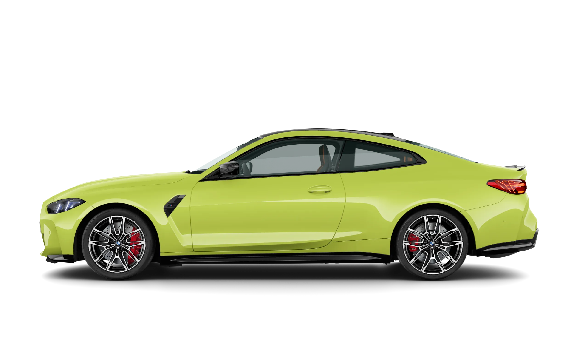

BMW M4
BMW M4 — спорткар, производимый немецкой автомобильной компанией BMW. Автомобиль представляет собой спортивную «M» купе версию BMW 4 и является заменой купе BMW M3 четвертого поколения, также известного как E92. Концепт был представлен 16 августа 2013 года. Впервые для BMW M3 и BMW 4 серии, был установлен двигатель с турбонаддувом и впервые для M серии электрический усилитель руля.
Модели
BMW M4 CSL, BMW M4 Competition Coupé, BMW M4 Coupé, BMW M440i, BMW M440i xDrive и BMW M440d xDrive Coupé. Автомобили BMW M4 серии Coupé предлагают прекрасное сочетание эстетики, характера и типичной для серии М спортивности. Безусловным лидером является BMW M4 CSL с впечатляющей мощностью в 551 л. с.
Історія BMW M4
BMW M4 (БМВ М4) – задне- или полноприводное купе класса «G1» c заводским индексом G82, самая мощная версия 4 Series. Второе поколение модели. Премьерный показ автомобиля состоялся 23 сентября 2020. Внешний вид наиболее производительного 4 Series не стал откровением: неоднозначно воспринятая огромная фальшрадиаторная решетка появилась сначала на базовой модели купе (в отличие от седана 3 Series). Но М4 отличается не только решеткой: здесь и более развитый обвес с черными вставками по кругу, и увеличенные колесные арки (М4 шире базовой модификации на 35 мм); крыша выполнена из углепластика, позади – четыре 100-миллиметровых патрубка выхлопной системы (с управляемыми заслонками). Колеса спереди и позади разновеликие и разноширокие (275/40 ZR18 и 285/35 ZR19). Агрессивная внешность является оберткой для серьезных показателей производительности силовой установки и шасси. М4 оснащается 3.0-литровым мотором с двумя моноскрольными турбинами, системами изменения фаз газораспределения (Double VANOS) и высоты поднятия клапанов (Valvetronic). Максимальное давления впрыска топлива – 350 бар. Также мотор оснащен производительной системой охлаждения, а в версии Competition (более мощной) – еще и дополнительными охлаждающими установками для масла как в моторе, так и в коробке. Производительность двигателя составляет 480 сил и 580 Нм крутящего момента, показатели в версии Competition – 510 сил и 650 Нм.